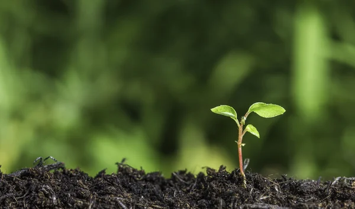

AMBIENTALISTA:
align=right Aqui vamos a ensenar a como cuidar y conservar nuestroambiente y la importancia de este (Medio ambiente, Calentamiento global,
importancia de los animales, Entre otros)

OBRAS LITERARIAS
Aqui vamos a hablar de las obras y poesias mas importante y que mas nos ayudan
para mejorar nuestra lectura critica y vamos a recomendar libros
fisicos y digitales para que todos puedan leer (Los herederos de William Gording,
Notas de america de Charles Dickers, juice ermenyard de H.P Lovecraft, Entre otros.)

IDIOMAS
Aqui vamos a hablar de lo importante que es tener el ingles o algun idiomacomo segunda lengua y las oportunidades que nos pueden dar a nosotros como
estudiantes

PROBLEMAS SOCIALES
Aqui vamos a ver los problemas sociales y actuales que sucedeninternacional y nacionalmente (Estetica y autoestima, comunidad lgbtq+,
noticias sobre colombia, moralidad, Entre otros.)

DEPORTES
Aqui vamos a ver la importancia de hacer actividad fisica y tambien vamos aver algunas cosas sobre las mas importantes personas en el mundo del deporte
y vamos a dar informacion sobre los eventos deportivos donde se pueda participar